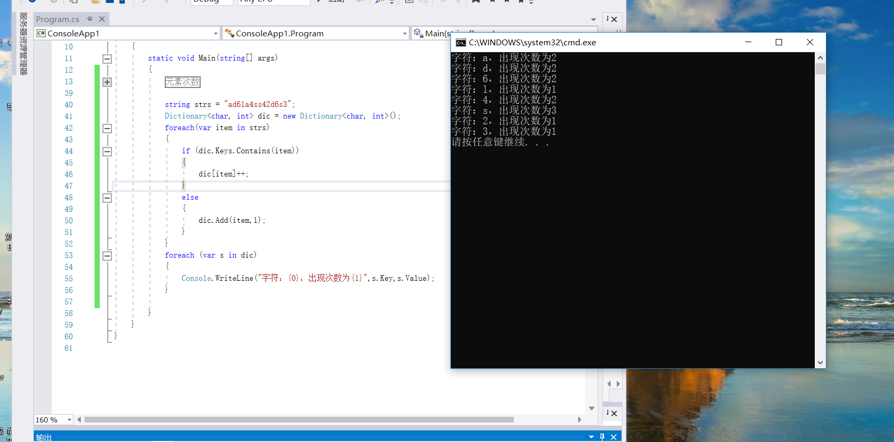

代码如下:
string strs = "ad6la4ss42d6s3";
Dictionary<char, int> dic = new Dictionary<char, int>();
foreach(var item in strs)
{
if (dic.Keys.Contains(item))
{
dic[item]++;
}
else
{
dic.Add(item,1);
}
}
foreach (var s in dic)
{
Console.WriteLine("字符：{0}，出现次数为{1}",s.Key,s.Value);
}
